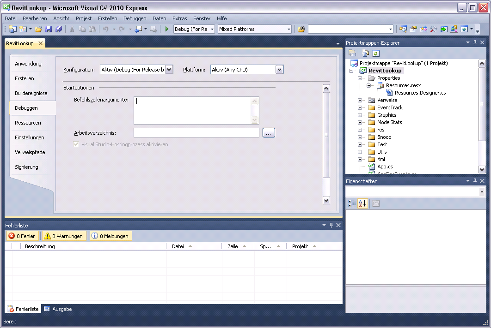

Debugging in Visual Studio 2010 Express
Yesterday was the first day of the Revit API training in Munich. As usual, I was able to learn something new.
Frank Neuberg of MAX BÖGL assembled and tested the following summary of information sources related to using Visual Studio 2010 and its Express version for creating and debugging a Revit add-in.
I've summarized some information sources to set up an integrated debugging process for class library projects together with Revit.exe (2011) in C# Visual Studio 2010 Express Edition:
Currently available information on the web/blogs:
- Debugging using Express Editions (July 06, 2006 by Kean Walmsley)
- Debugging external application (September 03, 2009 by Mike Cvelide)
- Visual Studio 2010 and the .NET Framework (July 20, 2010 by Jeremy Tammik)
- Debugging with Visual Studio 2010 and RvtSamples (April 14, 2010 by Jeremy Tammik)
- Visual Studio 2010 and Revit API debugging issues (April 15, 2010 by Rod Howarth)
Summary of changes to enable debugging class libraries with Revit.exe:
A. Edit the Revit.exe.config file (normally located in the Revit Program directory). Add the following section (preferably at the end of the file):
<startup> <supportedRuntime version="v2.0.50727" /> </startup> </configuration>
B. Edit your C# project file (like 'myCSProject.csproj') manually and add the last lines specifying the StartAction and StartProgram tags to each PropertyGroup for which you want to enable debugging with Revit.exe:
<PropertyGroup Condition=" '$(Configuration)|$(Platform)' == 'Debug %28For Release build of Revit%29|AnyCPU' "> <OutputPath>bin\Debug\</OutputPath> <AllowUnsafeBlocks>false</AllowUnsafeBlocks> <BaseAddress>285212672</BaseAddress> <CheckForOverflowUnderflow>false</CheckForOverflowUnderflow> <ConfigurationOverrideFile> </ConfigurationOverrideFile> <DefineConstants>DEBUG;TRACE</DefineConstants> <DocumentationFile> </DocumentationFile> <DebugSymbols>true</DebugSymbols> <FileAlignment>4096</FileAlignment> <Optimize>false</Optimize> <RegisterForComInterop>false</RegisterForComInterop> <RemoveIntegerChecks>false</RemoveIntegerChecks> <TreatWarningsAsErrors>false</TreatWarningsAsErrors> <WarningLevel>4</WarningLevel> <DebugType>full</DebugType> <ErrorReport>prompt</ErrorReport> <UseVSHostingProcess>true</UseVSHostingProcess> <StartAction>Program</StartAction> <StartProgram>C:\Program Files\Revit Architecture 2011\Program\Revit.exe</StartProgram> </PropertyGroup>
C. Unfortunately the new entry for debugging with Revit.exe is not visible in the project property pallette > Tab: 'Debugging' within the C# IDE - EE, but it works anyway:

Many thanks to Frank for testing and documenting this for us!